Hola, soy Sanjay, y no soy un experto en temas de conectividad, pero he aprendido cacharreando: es decir, a punta de prueba y error, y también, preguntándole a otras personas sobre el tema.
En esta solución, vas a poder instalar una antena 3G/4G que hayas comprado. Si aún no tienes una, puedes ir a la solución “¿Cómo comprar una antena 3G-4G?” → para saber cuál te funciona mejor.
¡OJO! Es importante que sepas que hay muchos tipos de antenas 3G o 4G, aunque, en general, esta solución debería servirte para instalar la que tengas.
Es posible que tu antena venga con un manual o instructivo. Te recomendamos leerlo primero. Pero, si no lo tienes, o si quien te vendió la antena no te explicó cómo hacerlo, ¡lo que viene te puede servir!
Recuerda, las instrucciones y lo que encuentres aquí pueden verse algo diferente.
¿Para qué sirve esta solución?
Existen lugares en los que la señal de telefonía celular es muy débil. Puedes verlo en la barras de conexión de tu celular (podría verse una sola barra o algo que dice H+, E o, incluso, que no hay señal). Una antena, que tenga las características necesarias para las condiciones del lugar desde el que te quieres conectar, puede ayudarte a conseguir una mejor calidad de conexión.
Hace poco entendí que la señal de Internet, que llega a los celulares, viaja por ondas electromagnéticas invisibles, y que los celulares tienen una antena pequeña en su interior, que captura esas ondas, permitiéndonos tener acceso a internet.
Lo que la antena hace es capturar y amplificar la señal de datos específica del celular (3G o 4G), es decir, la señal viaja, en ondas electromagnéticas, por el aire, desde un lugar más alto que en el que estás tú -por encima de arboles, edificaciones o colinas- y luego baja, por un cable, a tu altura. Cuando está a tu altura, la señal, puede compartirse por al aire usando una red WiFi, o por cable usando un módem o enrutador.
Sé que estos términos pueden parecer confusos, pero a medida que avances por los pasos de la instalación lo irás teniendo más claros.
Antes de empezar, unas cuestiones de seguridad
Recuerda que estas trabajando con equipos eléctricos. Ten cuidado al momento de conectar la corriente eléctrica. Sé consciente de la condiciones climáticas, especialmente el riesgo de tormenta: la antena, al momento de instalarla, la haría actuar como un pararrayos. Un rayo en la antena podría causar graves daños personales y materiales.
¿Qué necesitas?
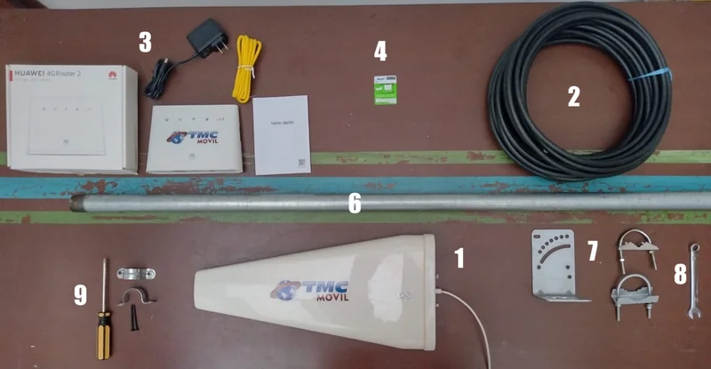
- La antena 3G-4G → que hayas comprado.
- Cable coaxial → para traer la señal de la antena.
- Módem → con su respectivo cable de poder, cable de Ethernet y guía de inicio rápido (o manual de instrucciones).
- Tarjeta SIM → del operador celular que tenga mejor señal en la zona.
- Computador con conexión Ethernet → y/o WiFi → o teléfono móvil inteligente → (Android / IOS)
- Una vara alta (de la misma longitud del cable o un poco menos): puede ser un tubo de metal, madera o guadua. Lo importante es que sea lo más recta posible y resistente.
- Soportes de la antena (que permiten colgar la antena a la vara alta).
- Llave para apretar tuercas.
- Materiales y herramientas para fijar la vara (depende de dónde la instales).
¿Cómo se hace?
Esta solución tiene 6 pasos, unos más sencillos que otros, pero no te preocupes, si yo pude hacerlo, tú también podrás. ¡Empecemos!
PASO 1 → Define el lugar en donde va a quedar instalada la antena y el módem
Antes de desempacar tu compra, define dónde quieres (o quieren) que el módem y la antena se ubiquen permanentemente. Si es en tu casa, puede ser en la sala. Si es en un espacio comunitario, puede ser en un cuarto que sea seguro, pero en el que la señal llegue de todos los que lo quieran usar.
Ten en cuenta que la antena debe ir sujeta de forma segura a la vara, y la vara debe poder asegurarse firmemente, de algún modo, fuera de la vivienda o espacio. Más adelante te explicaremos cómo.
El módem necesita electricidad, entonces, identifica la toma de corriente a la que lo vas a conectar.
Finalmente, define por dónde vas a introducir el cable desde la antena hasta el espacio en donde estará el módem. Puede que tengas que taladrar un hueco en la pared, para no tener que dejar una ventana abierta. ¡OJO! No hagas esto hasta que hayas comprobado en dónde la antena funciona y se conecta mejor.


Paso 2 → Identifica las torres de telefonía móvil de la zona
Para que las antenas funcionen lo mejor posible, deben poder “verse” la una a otra o, por lo menos, deberían apuntar hacia el mismo lugar.
Si vives en una región con muchas montañas será un poco más difícil acceder a una buena señal, comparado con un lugar plano. Si este es tu caso, tu antena va a necesitar mayor altura.
Ahora identifica la torre de telefonía más cercana. Busca torres altas con antenas. Normalmente, están ubicadas en las cuimas de las montañas más altas para permitir mayor cobertura. Es muy importante que la ubiques porque allí es a donde tu antena debe apuntar.

Si no sabes dónde queda la torre de telefonía celular más cercana, también puedes preguntarle a los vecinos.
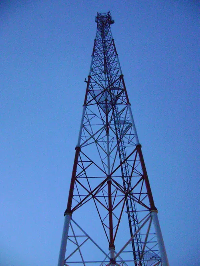
Tomado de Wikimedia Commons🎉 Si llegaste hasta aquí, significa que ya lograste establecer la ubicación de los elementos principales de tu solución. Es decir que ya sabes…
- Dónde instalar tu antena (dónde va a quedar)
- Hacia dónde debe apuntar, es decir, hacia la torre de telefonía más cercana.
- Dónde pondrás el módem que generará la señal de WiFi para conectar computadores o celulares.
¡Vas muy bien! Ahora viene lo fácil: armar la antena.
Paso 3 → Inserta la SIM y conecta el módem a la electricidad
Abre la caja del módem. Debe incluir un cable de corriente, un cable de Ethernet (para conectar un computador) y una guía de inicio rápido (instrucciones). Lee la guía cuidadosamente porque cada antena es diferente. Los pasos siguientes de esta solución deben coincidir con los de la guía, sólo que de forma más detallada.
Ten en cuenta que insertar la SIM puede ser complejo. Yo tuve que hacer varios intentos hasta lograrlo. Asegúrate de que la parte metálica de la SIM (el chip) coincida con los contactos metálicos del módem. Abajo te lo explico un poco mejor.

Identifica el tamaño de tarjeta SIM que corresponda con la bandeja del módem.
Primero, abre la tapa del módem en donde se inserta la SIM (usualmente está en la parte de atrás del modem). Identifica el tamaño de tarjeta que debes insertar. En las instrucciones del módem (inicio rápido)te lo indica. En el modelo que yo tengo usa el tamaño Mini SIM.

Inserta la tarjeta SIM en la bandeja.
Notarás que, tanto la bandeja de la SIM como la tarjeta SIM tienen una esquina cortada (biselada). Ésta indica la posición en la que debes insertar la tarjeta.

Inserta la SIM cuidadosamente en la bandeja y tápala de regreso.

Conecta el cable de poder al módem y a la toma corriente.
Luego, enciende el módem como te indica la guía. Puede ser automático o con un botón de encendido.
Revisa que el módem esté conectado a internet.
En el frente del módem encuentras diferentes indicadores de conexión, y en las instrucciones lo que significa cada una. En el modelo de ejemplo vemos que:
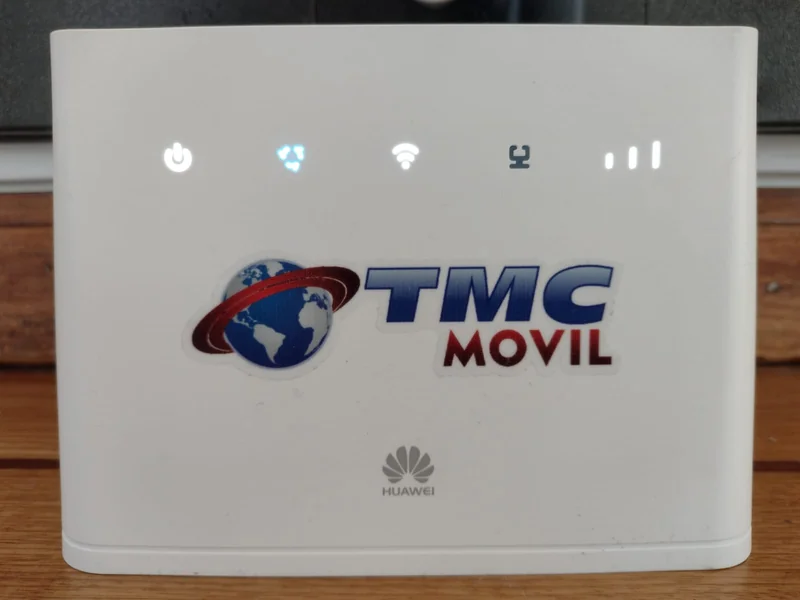
- El primer indicador de izquierda a derecha muestra si está encendido o apagado.
- Cuando el segundo está rojo, significa que no tiene señal. Si está azul o verde significa que está conectado. (En este ejemplo está conectado).
- El tercero indica que el módem está emitiendo una señal inalámbrica o WiFi en el espacio.
- El cuarto muestra si hay un cable ethernet conectado (en este caso no).
- Y el quinto representa la potencia de la señal (como las barras de señal del celular). En este ejemplo, la señal es muy buena.
Terminado este paso, ya tu módem está listo, ¡vas por la mitad de la solución! Si el indicador de conexión (el segundo en el ejemplo) está en rojo, simplemente apaga el módem y vamos a conectarle la antena.
Paso 4 → Conecta todos los elementos de la antena e iza la antena
Llegó el momento de armar tu antena. Lo mejor para empezar es sacar y poner juntos todos los elementos que se necesitan para armarla. Luego, empecemos.
Ajusta la antena al extremo más alto de la vara.
Comienza ajustando el soporte de la antena a la base de la antena usando los tornillos que trae para esto. Aprieta los tornillos con cuidado asegurándote que queden bien ajustados.
Luego ajusta los soportes de la antena al extremo más alto de la vara. Recuerda que la vara debe ser más corta que la longitud del cable tengas. Los soportes tienen una pieza para “envolver” la vara de tal manera que al apretar las tuercas aprisione la vara como en la imagen.

|
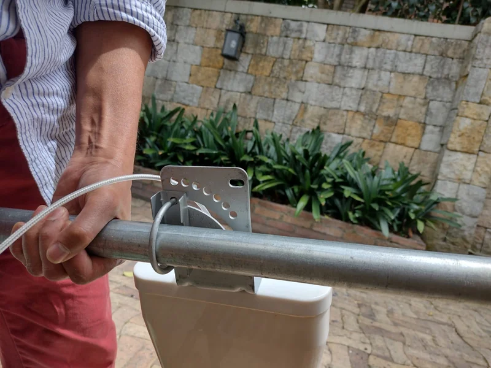 |
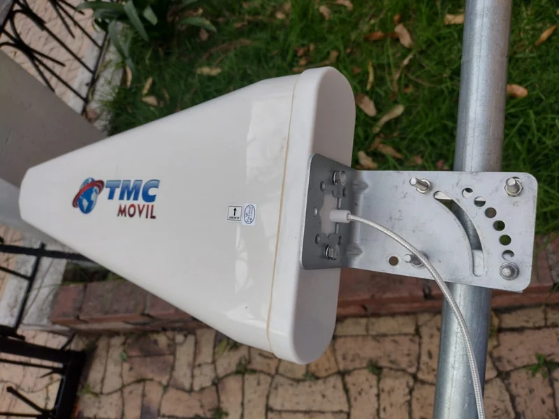 |
Extiende el cable y conecta el extremo que va al cable de la antena.
Desenrollar el cable y extenderlo a su máxima longitud ayuda a que sea más fácil de manipular. Busca el conector que encaja con el conector de la antena y conéctalos.


Busca el conector del módem al cable y conecta.
En este modelo de módem hay una tapa en la parte de atrás del módem que debes retirar con un poco de fuerza (guarda la tapa en la caja del módem). Ahí encuentras el lugar para conectar el cable. Aprieta la rosca del conector al máximo de manera cuidadosa.
|
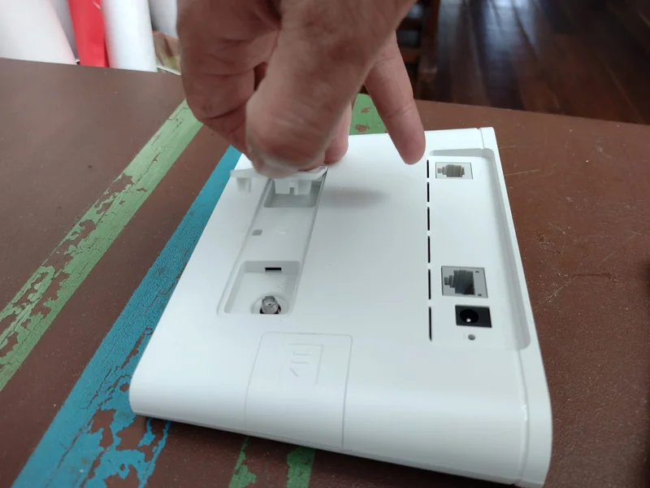 |

|
Ahora puedes izar la antena con la ayuda de otra persona y apuntarla hacia la torre de telefonía que identificaste en el segundo paso. Luego, enciende el módem y listo. Te quedan sólo dos pasos para terminar. ¡Bravo! 👏🏽
Paso 5 → Conecta el computador o el celular al módem
Enciende el WiFi de tu computador o de tu celular y busca la red del módem. Usualmente encuentras el nombre de la red en una pegatina en la base del módem. Ahí también encontrarás la contraseña para conectarte. Ingresa la información en tu dispositivo y con esto ¡ya estás listo para navegar en Internet!
Si tu computador tiene entrada de Ethernet →, también puedes conectarte directamente por cable. Conectarse por cable siempre te dará la mejor velocidad de navegación en internet posible.

Si ya lograste conectarte ve al siguiente paso. Si no, lee lo que viene a continuación
¿No pudiste conectarte a internet? Tengo algunas recomendaciones para ti 👇🏽
A veces nos encontramos en lugares distantes de las torres de telefonía celular o con mucha interferencia entre la torre y nuestra antena. Si este es tu caso, puedes probar algunas alternativas.
- Ingresa a la página web de administración del módem y prueba apuntar la antena en otras direcciones.
Ingresa al navegador de tu dispositivo (puede ser Firefox, Google Chrome, Microsoft Edge o Explorer) y escribe la dirección IP de tu módem. Por lo general, esta dirección la encuentras en las misma pegatina bajo del modem. La IP de este modem 👇🏽, por ejemplo, es 192.168.8.1.
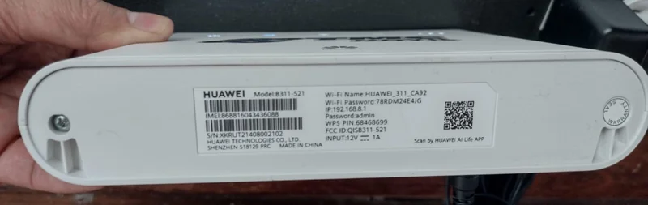

Cuando ingresas a esa dirección IP verás la página de ingreso al módem. Allí te pedirán la contraseña, que también encuentras en la pegatina. Usualmente, la contraseña es admin en minúsculas.
Luego te harán algunas preguntas para configurar las preferencias de tu módem. Lee cuidadosamente y selecciona lo que mejor te parezca. Al terminar, llegarás a la pagina de inicio del módem en donde podrás conocer la calidad y velocidad de la conexión.
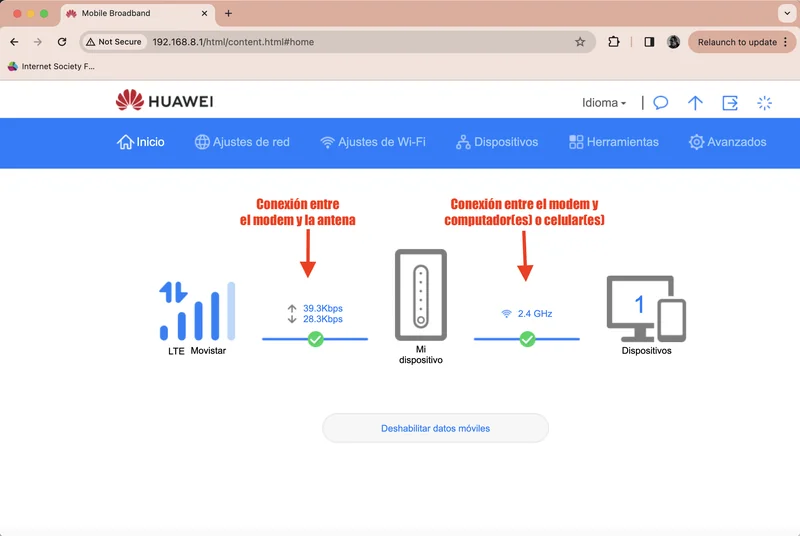
Si aparecen los chulitos o tics verdes, significa que todo está bien conectado. En cambio, si ves un signo de exclamación rojo y una “X” en las barras de internet significa que no hay conexión.

Aquí es donde debes comenzar a girar la antena buscando apuntarla en otra dirección hasta encontrar una mejor conexión con la torre de telefonía celular. Hazlo despacio y en intervalos pequeños. También apuntarla ligeramente más hacia arriba o hacia abajo usando lo distintos huecos del soporte de la antena a la vara.
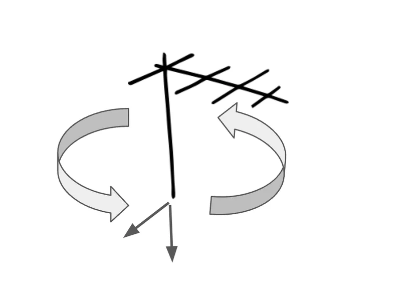
Cada vez que cambies la posición de tu antena, espera unos segundos para ver si los indicadores en la pantalla o en el dispositivo cambian. Si aparecen la barras de internet y el chulito o tic verde ¡haz logrado conseguir señal! ¡Felicitaciones! Ya puedes navegar en internet.
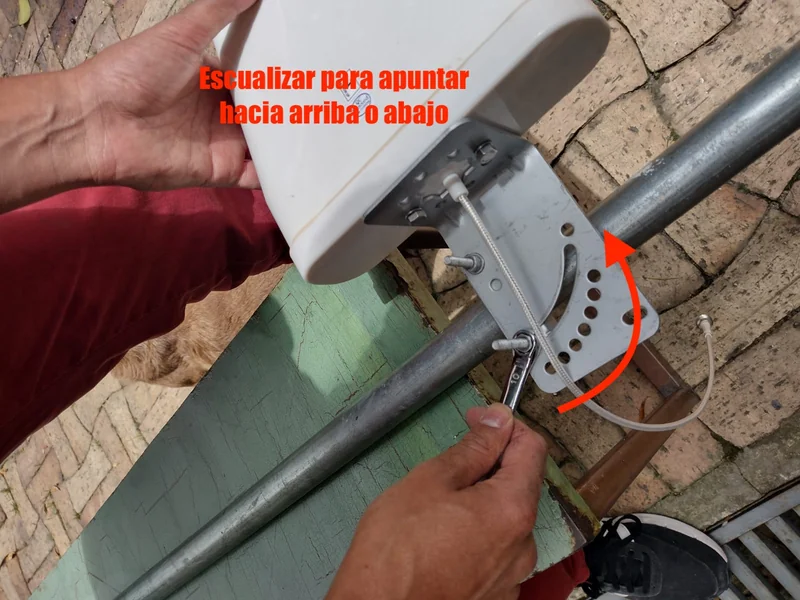
💡 ¿Cómo se mide el uso de internet? El uso se mide por la cantidad de datos que se descargan en tu computador o celular al hacer “una consulta” (por ejemplo, ver un video, escuchar una canción, leer un artículo en un periódico en línea o recibir un mensaje de texto). El “peso” de cada uno de esos archivos se mide en bytes de información y la medida más común cuando compras un plan de datos son las Gigas, Gb o Gigabytes.
¿Sabes qué tantas cosas puedes hacer con 1 Giga (1Gb)? ¡Ingresa a este enlace → para saberlo!
💡 ¿Qué tan rápido se puede acceder a la información en internet? Al igual que saber cuánto “pesan” es importante saber a qué velocidad puedes acceder a esos archivos que estas consultando. Esto se mide en Megabytes por segundo o Mbps que se descargan a tu computador o celular.
¿Sabes qué velocidad necesitas para tener ciertos servicios? ¡Ingresa a este enlace → para saberlo!
🧭 Haz pruebas de la velocidad
Ahora que conoces sobre el peso y la velocidad de los datos, puedes hacer tu propia prueba de velocidad Ésta te permitirá saber qué tan rápido están descargándose los datos desde internet. Para esto consulta la solución “¿Cómo probar la velocidad de tu conexión a Internet?” →. Allí encontrarás el paso a paso.
¿Sigues sin poder conectarte? 😖 Aquí te dejamos algunas recomendaciones más avanzadas 👇🏽
Para mayor precisión, pudes hacer pruebas de potencia de la señal girando la antena en distintas direcciones.
A veces las condiciones geográficas son más complejas de lo que imaginamos. En esos casos tendremos que determinar si efectivamente la antena está conectada a la torre de telefonía celular y con qué calidad.
Para eso ingresa a la sección de “Avanzados” en el menú del módem y busca “Sistema” y luego “Información del dispositivo”. Así aparece en mi módem, pero debe ser algo similar en el tuyo.

En este listado de información encontrarás varios datos. Los 4 parámetros que estás buscando son
- RSRQ, que indica la calidad de la señal
- RSRP, que indica la potencia de la señal;
- RSSI, que indica la fuerza de la señal;
- SINR, que indica la relación entre la señal y el ruido que se está generando.
*Recuerda que la señal son ondas electromagnéticas que viajan por el aire.

A continuación, puedes ver una tabla que indica los parámetros de la cobertura de la señal de celular que está recibiendo tu antena. Nota que tres de ellos son números negativos y a medida que se van acercando a cero es que la señal mejora. Puede parecer un poco técnica esta información, pero no te preocupes, no es necesario entenderla con mucha profundidad para que funcione.
| Cobertura | RSRQ | RSRP | RSSI | SINR |
|---|---|---|---|---|
| Excelente | > -10 dB | > -80 dBm | > -65 dBm | > 20 dB |
| Buena | -10 dB a -15dB | -80 dBm a -90 dBm | -65 dBm a -75 dBm | 13 dB a 20 dB |
| Media | -15 dB a -20 dB | -90 dBm a -100 dBm | -75 dBm a -85 dBm | 0 dB a 13 dB |
| Baja | < -20 dB | < -100 dBm | < -85 dBm | < -0 dB |
*Ten en cuenta que ”>” significa “mayor que” y ”<” significa “menor que”. Es decir que ”> -10 dB” quiere decir “mayor que -10dB”. *Recuerda que los números negativos funcionan a la inversa que los números positivos. Por ejemplo, -10dB es mayor que -80dB (porque está más cerca del cero).
Con esta información presente, lo que debes hacer es seguir rotando la antena izada en pequeños intervalos y esperar unos segundos para ver cómo cambian esos números.
Yo me fijo principalmente en el RSRP que es la potencia de la conexión. Te puede ser útil dibujar un círculo en el piso alrededor de la vara de la antena, y dibujar líneas que dividan el círculo en pedazos iguales. Luego, apuntas la antena en la dirección de cada línea y verificas si el parámetro mejoró o empeoró. Si mejoró sigue girando y revisando el parámetro. Si empeoró regresa al punto anterior.
Así es como se coloca la antena con mayor precisión. ¡Buena suerte capturando la señal! Te has vuelto un verdadero cacharrero o cacharrera del internet.

💡 Ten en cuenta que el clima afecta la señal Como estás usando una antena exterior puede que las condiciones climáticas afecten qué tan rápida o lenta es tu conexión. Por ejemplo, un día muy húmedo puede hacer que tu conexión se vuelva más lenta. No te preocupes, poco a poco irás mejorando tu experiencia de usar el internet juntos a medida que vayas probando nuevas soluciones.
Paso 6 → Fija la antena
¡Hemos llegado a nuestro último paso!
Ahora, conociendo la mejor dirección de la antena, es momento de instalar tu antena permanentemente a un muro, una columna o un árbol, en el lugar que hayas determinado en el Paso 1.
Aprieta los soportes de la antena a la vara e iza la antena
Con la ayuda de una llave, aprieta con fuerza los soportes de la antena a la vara para asegurar que no se muevan con el viento o la lluvia o si un pájaro se posa encima. Si ya los tenías bien apretados no es necesario hacer esto de nuevo.
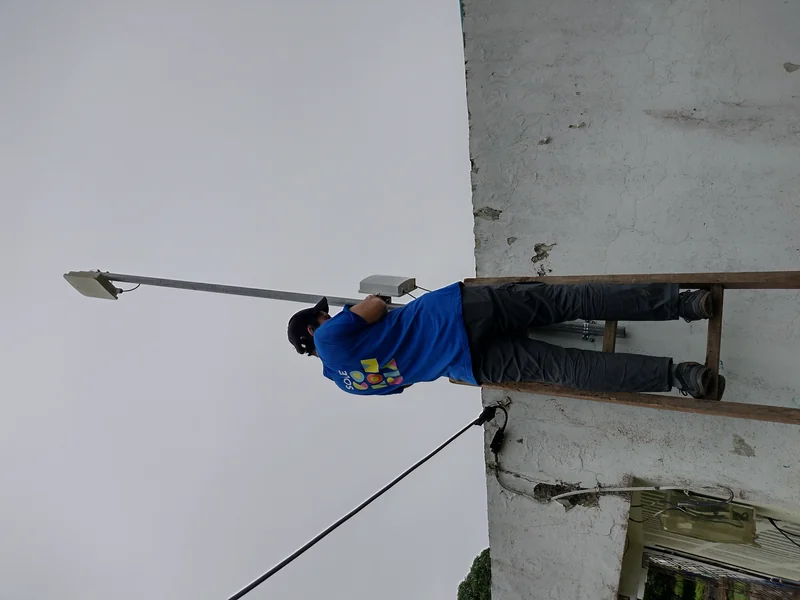
Ancla la vara a la pared o al soporte que tengas
Luego, utiliza soportes adecuados para anclar las vara a la base. Si es a una pared, taladra y pon chazos y tornillos para asegurarlo. Si es a un árbol amarrala con alambre.

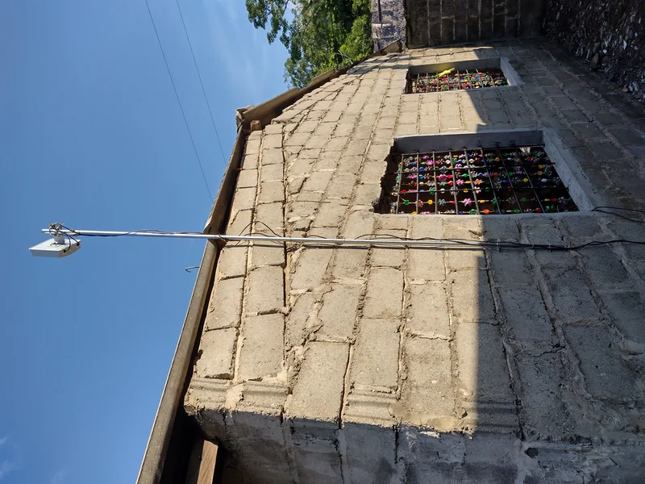
Una vez fija, has terminado la instalación de una antena 3G/4G que te permitirá tener señal WiFi en un espacio fijo.
Eres, oficialmente, “el o la cacharrera” de tu hogar o comunidad. ¡Felicidades! 👷🏽♀️🎉👷🏽
A punta de prueba y el error podrás sentirte cada vez más seguro o segura para cacharrear, es decir, para resolver haciendo. Ahora, ¿te animarías a hacer otra solución? ¡Animáte a neguir navegando! Ver más soluciones →
¿Qué puedes lograr con esta solución?
Entre muchas soluciones de conectividad que he probado, esta es de las mejores para generar un espacio para acceder a Internet juntos, permitiendo que varias personas puedan conectarse al tiempo a una señal WiFi en lugares en donde la señal de 3G o 4G es débil.
La recomiendo no solo para el hogar, sino para espacios comunes como colegios, bibliotecas, negocios o salones comunales. También sirve en espacios públicos como parques si tienen algún lugar para dejarla bajo seguro y con electricidad constante.
Ten presente que si no hay cobertura de telefonía móvil, esta solución no servirá. Pero no te desanimes, la cobertura de la telefonía está aumentando paulatinamente en todo el planeta. Mientras tanto, puedes consultar otra herramienta de SOLE llamada “El Desconectado” →, en donde encontrarás solucoines para lugares en donde no hay internet.
Aunque no es una solución económica (el precio de una antena está entre los
Para esto, la comunidad podría ponerse de acuerdo, comprarla con aportes de todas las personas y mantenerla juntos. Esto puede resultar en un gasto inicial considerable, pero a futuro es más económico que cuando cada persona compra su propio plan de datos individualmente.
💡 En SOLE Colombia hemos realizado esta solución con comunidades en las que se instala una antena en un espacio comunitario al que todas las personas pueden acceder. Allí, la comunidad decide cuánto, cuándo y para qué se utiliza el internet. De esta manera, se regula colectivamente la recarga de datos según las necesidades y se aprovechan al máximo de forma compartida.
Por ejemplo, se prioriza que los niños puedan hacer sus tareas o que la comunidad vea una película en conjunto, por encima de usos individuales como el acceso a redes sociales. Esto, por supuesto, implica nuevos retos. Pero el punto de partida es claro: ¡ya tienes acceso a internet!
💬💪🏽 Conoce cómo fue la experiencia de una comunidad en Cáceres Antioquia →
Sabiendo esto, ¿hasta dónde te gustaría llegar a ti? ¿Es ésta una solución que podrías incentivar en donde vives? ¡Esperamos que te haya sido útil! Y si así fue, compártela con otras personas a quienes sepas que les podría servir.
¡Hasta pronto! 👋🏽
Soluciones relacionadas
-
Si en el lugar donde vives no hay señal móvil, esta solución podría serte útil: ¿Cómo comprar una antena satelital? →
-
Una vez instalados los equipos, el reto es cuidarlos en comunidad. En esta solución te compartimos un juego que podría ayudarte: ¿Cómo usar el juego para aprender a cuidar equipos en comunidad? →
Recuerda que en Voltaje ⚡⚡ puedes encontrar muchas soluciones más para conectarte sin miedo a usar el internet en grupo. ¡Animáte a neguir navegando! Ver más soluciones →